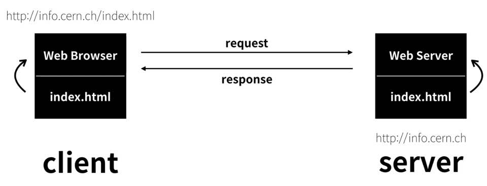

unsplash.com고화질 이미지를 저작권없이 무료로 사용가능하다.
html은 150개가 넘는 종류가 있지만 외울필요는 없고 필요할 때 찾아쓰면 된다.html에서 중요한 태그 알려준다.
문법 설명
u - 밑줄치기, br - 한줄띄기, p - 문단띄기, ul - li의 부모 tag 어디서 부터 어디까지인지 구분을 해주는 것이다, ol - orederd list로 자동적으로 번호 매김, a - 다른 사이트와 연결해준다(link). charset - 문자규칙
자주가는 웹사이트에서 View souce누르면 그 사이트의 html나온다
22강. 수업을 마치며웹사이트를 아름답게 하려면 CSS를 공부해야한다. CSS는 HTML탄생 4년 후 생김 CSS공부하고 싶으면 web2 CSS공부하면 된다. 사용자와 상호작용하는 웹사이트를 만들고 싶으면 javascript를 공부해야 한다.javascript는 HTML탄생 5년 후 생김, 자바스크립트 공부하고 싶으면 web2 javascript 공부하면 된다. 자바스크립트 등장 후 frontend engineer 생겨났다.
1억개의 웹페이지로 구성된 웹사이트를 운영하다고 가정해보자. 웹사이트에 있는 웹페이지에서 h1 tag를 h2 tag로 바꿔야 한다면 1억개의 웹페이지를 변경해야 할 것이다.이 한계를 극복하기 위해서는 backend기술을 배워야함. 한개 웹페이지에서만 바꾸면 나머지 웹페이지에서도 바뀐다. JSP, JangGo, RubyonRails등이 다 backend
웹사이트에서 광고 붙여서 돈 벌고 싶으면 web2 광고를 배우면 된다.
16강. 원시웹
1960년 인터넷이 처음등장하는데 그 당시 화두는 핵이였다. 그 당시 통신시스템은 중앙집권적이었다. 핵 공격에서도 통신시스템이 끊기지 않기 위해 인터넷을 개발했다. 수많은 통신시스템들을 전화국처럼 서로 연결하는 것. 1990년 웹이 등장하면서 인터넷에 혁명이 일어남. 팀 버너스 리 - 웹의 아버지 1990년 10월 처음으로 웹페이지를 편집하는 웹편집기를 만듦. 11월에 웹브라우저인 world wide web을 만듦. 12월에 web server를 만듦. 인터넷이 대중화의 길을 걷게됨
17강. 인터넷을 여는 열쇠 : 서버와 클라이언트
인터넷이 동작하는 기본원리 : 2대 이상의 컴퓨터, 두대의 컴퓨터가 서로 정보를 주고받는 순간 혁명의 시작, 하나의 컴퓨터에는 웹 브라우저라는 프로그램을 하나의 컴퓨터에는 웹 서버라는 프로그램을 설치, 이 두대의 컴퓨터는 인터넷으로 서로 연결 됨 
부록1. 코드의 힘 : 동영상 삽입
웹사이트같은 서비스의 단순한 소비자가 아닌, 생산자가 되고자한다면 코드의 힘을 다소 낯설게, 새삼스럽게 그 위력을 음미하며 그 효용성과 힘에 공감하여 바라볼 필요가 있다.
부록2. 코드의 힘 : 댓글 기능 추가
방문자와의 교류수단인 댓글기능을 직접 구현하기 위해서는 html로는 불가능하고 python, php, jsp, JangGo 등 backend 기능을 알아야 한다.database까지 구현해야함 댓글서비스는 상당한 기술력을 요구한다. 댓글은 스팸이 달리기 때문에 들어온 댓글을 기계가 차단할 수 있는 기능을 추가해야함. 댓글에 이미지 첨가할 수도 있다. 댓글이 별거 아닌 것 같지만 굉장히 많은 기능이 필요. 개발을 직접 하는 것도 좋지만 남들이 만든 댓글을 내 웹사이트에 포함시키면 된다. disqus, livere를 포함
부록4. 코드의 힘 : 웹사이트 방문자 분석기
여러가지 웹사이트 분석기 사이트가 있다. 그 방문자가 어떤 경로를 통해 이 웹사이트에 도착했는지 몇명이 방문했는지, 어떤 경로를 통해 이동하고 있고 어떤 환경에서 웹사이트를 탐색하고 있는지 등의 정보를 제공. analytics.google.com